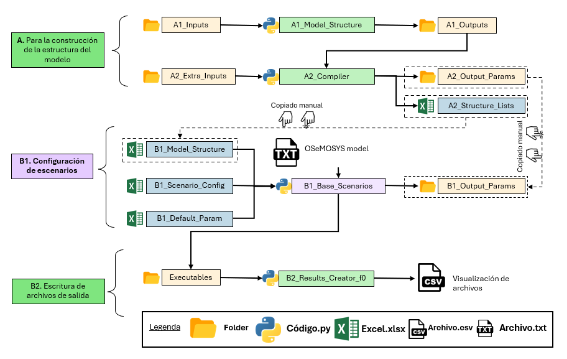

8. ¿Cómo usar el modelo?
En primer lugar, es importante tener en cuenta el flujo de trabajo que se muestra en la Figura 8.1 . Este flujo de trabajo nos indica cuáles son los archivos importantes para ejecutar cada paso y proporciona una mejor comprensión general.

Figura 8.1 Flujo de trabajo del modelo
9.1. Crear la estructura del modelo (A1)
El primer paso del OSeMOSYS-ECU es crear la estructura del modelo. Para ello, necesita ejecutar el script de Python A1_Model_Structure. Para realizar esta ejecución, es necesario parametrizar los archivos de Excel dentro de A1_Inputs:
A-I_Classifier_Modes_Demand
A-I_Classifier_Modes_Supply
A-I_Classifier_Modes_Transport
A-I_Horizon_Configuration
Luego, debes ejecutar el script de Python A1_Model_Structure. Al finalizar la ejecución, se generarán algunos archivos dentro de A1_Outputs:
A-O_AR_Model_Base_Year.xlsx
A-O_AR_Projections.xlsx
A-O_Demand.xlsx
A-O_Fleet.xlsx
A-O_Parametrization.xlsx
A-O_Fleet_Groups.pickle
Estos archivos se reescriben con la estructura predeterminada cada vez que se ejecuta el script de Python, por lo que se recomienda ejecutar este script solo una vez.
9.2. Compilador del modelo (A2)
El segundo paso consiste en definir el proceso para compilar el modelo en archivos por parámetro. Para ello, toma como entradas los archivos de Excel de A1_Outputs, además de los archivos de Excel de la carpeta A2_Xtra_Inputs y el archivo A2_Structure_Lists. Luego, ejecuta este script de Python.
Es importante tener en la carpeta A2_Outputs_Params/Default, los archivos predeterminados por parámetro utilizados por el script de Python A2_Compiler. Este script genera algunos archivos en las carpetas A1_Outputs y A2_Outputs_Params. En la segunda carpeta, se genera la misma cantidad de subcarpetas que escenarios tiene el modelo, y dentro de estas subcarpetas se encuentran los archivos de Excel con datos por parámetro.
9.3. Crear el archivo de entrada (B1)
El siguiente paso es más largo y requiere cuidado. Es importante seguir el flujo de trabajo en la figura al inicio de la sección. Primero, ve a la carpeta B1_Output_Params y elimina cualquier subcarpeta que encuentres allí. Luego, ve a la carpeta A2_Outputs_Params, copia las carpetas con el nombre de los escenarios, y pégalas en B1_Output_Params. También es necesario copiar manualmente los datos del archivo A2_Structure_Lists.xlsx al archivo B1_Model_Structure.
A continuación, debes parametrizar el modelo en los archivos B1_Scenario_Config.xlsx.
Para escribir el modelo, usa el script B1_Base_Scenarios_Adj_Parallel.py.
Los resultados de esta ejecución se encuentran en la carpeta B1_Output_Params. Los archivos en esta carpeta sobrescriben los de las salidas del paso A2. Además, el archivo del modelo se encuentra en la carpeta Executables, dentro de una subcarpeta para cada escenario. Este archivo es un archivo de texto, por ejemplo:
BAU_0.txt
9.4. Ejecución del modelo (B1)
Para ejecutar el modelo, usa el script B1_Base_Scenarios_Adj_Parallel.py.
Los resultados de esta ejecución se encuentran en la carpeta Executables, dentro de una subcarpeta para cada escenario, y generan tres archivos.
9.5. Concatenación de resultados (B2)
Este paso facilita el análisis de los resultados. Al ejecutar el script de Python B2_Results_Creator_f0.py, este toma los archivos CSV con datos de entrada y salida del modelo de cada escenario, los concatena y crea cuatro archivos:
Nombre_de_Escenario_Input.csv
Nombre_de_Escenario_Input_2024_10_22.csv
Nombre_de_Escenario_Output.csv
Nombre_de_Escenario_Output_2024_10_22.csv
Los archivos con fecha permiten rastrear ejecuciones realizadas en diferentes fechas, ya que los archivos sin fecha se sobrescriben con cada ejecución.